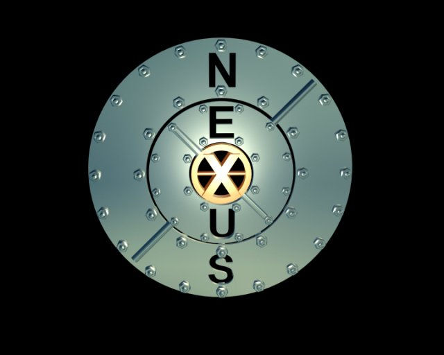

| Technologies Nexus Armées | |
|---|---|
 | |
| Armée | Nexus |
| Espèces répertoriées | Humains, Cyborgs, Robots, Mutants |
| Effectifs | Plusieurs milliers |
| Entreprises | RobCo Industries, Nova Laboratories, Cyberdyne Systems, Acme corporation, Nexus Laboratories, Nexus Laboratories et Union Nord-Américaine |

| Model | Fabriquant | Arme | Alimentation | Fonction |
|---|---|---|---|---|
|
Eyebot |
RobCo Industries |
AEP7 laser pistol |
Cellule énergétique |
Reconnaissance |
|
Droïdes SAINT |
Nova Laboratories |
Canon laser |
Pile nucléaire |
Anti-infanteries + Anti-Blindés |
|
T-800 |
Cyberdyne Systems |
Polyvalent |
Pile nucléaire |
Infiltration + Assassinat d'Organique |
|
T-X |
Cyberdyne Systems |
T-X plasma canon + Lance-flamme + Injecteur de Nanotechnologie + scie circulaire + Polyvalent |
Réacteur a Plasma |
Combat extrême + Assassinat Synthétique + Reprogrammation des synthétiques |
|
C-27 |
Acme corporation |
Polyvalent |
Réacteur à fusion |
Anti-Infanteries |
|
Griffemorts |
Nexus Laboratories |
Corp a corp |
/ |
Expérimentale |
| Model | Fabriquant | Arme | Alimentation | Fonction |
|---|---|---|---|---|
|
Robot sentinelle Annihilateur |
RobCo Industries |
2 miniguns calibre 5.56mm + 2 lance-missiles + 2 Mortiers |
Réacteur à fusion |
Anti-infanteries + soutien tactique |
|
Behemoth |
Norad industries |
4 canons calibre .50 |
Réacteur à fusion |
Anti-blindés |
|
HK-Tank |
Cyberdyne Systems |
2 minigun calibre .50 + 2 Lance missiles |
Réacteur à fusion |
Anti-blindés |
| Model | Fabriquant | Arme | Alimentation | Fonction |
|---|---|---|---|---|
|
Cargobot |
Union Nord-Américaine |
Aucun |
Réacteur à fusion |
Transport Léger |
|
Vertibot |
Union Nord-Américaine |
Aucun |
Réacteur à fusion |
Transport Lourd |
- Une escouade dans l'armée de Nexus et composé de 8 unités.
- Une section dans l'armée de Nexus et composé de 15 unités a 20 unités.
- Un peloton dans l'armée de Nexus et composé de 40 unités.
- Une légion dans l'armée de Nexus et composé de 100 unités.
Cette catégorie ne contient actuellement aucune page ni fichier multimédia.